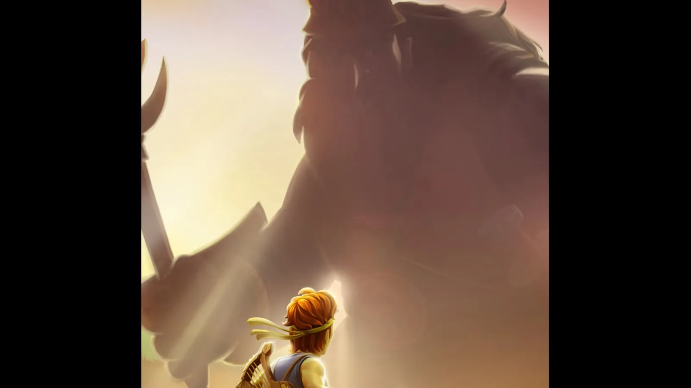
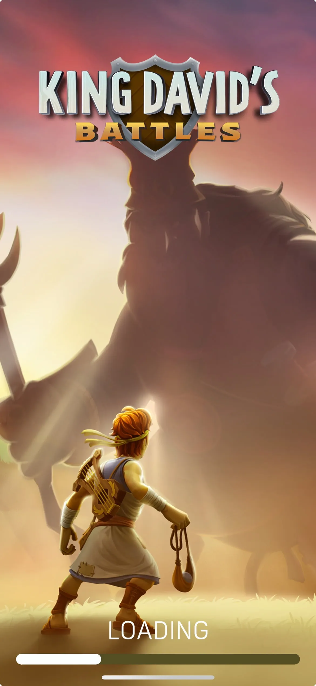

Project Overview
King David’s Battles is a fast, top-down action RPG built for mobile. The goal was to create a combat experience that felt quick, tactical, readable, and accessible to a broad audience.
I worked on the project for around eight months as the Lead Combat Designer, owning combat design from start to finish. My responsibilities included designing, tuning, and balancing:
- Player character abilities
- Enemies and bosses
- Weapons, armor, and power-up systems
- Combat pacing and encounter flow
- Level layouts and enemy compositions
I built an Excel system to simulate and tune damage values, timing windows, and overall combat balance throughout development.
The team was small, five people total with one engineer and two artists, and team members were regularly pulled onto other projects. This meant combat needed to be built efficiently, iterated quickly, and designed with production constraints in mind. The entire game needed to ship within 8–12 months.
Combat Goals
We wanted early combat encounters to be:
- Fast and tactical
- Readable at a glance
- Challenging but fair
- Casual-friendly, without punishing players early
From a design perspective, Chapters 1 and 2 needed to onboard players smoothly without creating early frustration. Both the design vision and analytics supported this: early deaths were strongly correlated with churn, especially on mobile.
A Problem: Bear Boss Slash Attack
The Bear Boss was the first major challenge in the game. A checkpoint moment intended to test player understanding without causing frustration.
Early user tests and analytics revealed a clear issue:
- Players were consistently dying to the Bear Boss’s slash attack
- The boss fight, designed to be easy, was performing as a huge difficulty spike
- The attack had poor readability
- Rage quits increased sharply during this encounter
- Players routinely quit the game after dying more than once in Chapter 1
The core problem: the slash attack’s telegraph was nearly invisible. The animation had almost no anticipation, and the VFX didn’t communicate timing or direction. Players couldn’t tell when to dodge, making the fight feel unfair.
Investigation
Watching playtest footage and reviewing user feedback made the problem clear:
- The attack fired too fast
- The wind-up had no noticeable anticipation
- The VFX blended into the environment
- The timing windows were too tight for casual players
- Players dodged after they were hit, believing they reacted correctly
At first, I assumed the boss was overtuned. But tuning numbers alone couldn’t fix what was fundamentally a readability issue.
Iteration Process
1. VFX Redesign
We added a phantom bear claw VFX, and a red progression bar type thing to show when and where the attack would happen, synced directly to the hitbox.
This visual effect:
- Created a clear shape and direction for the attack
- Provided brighter contrast against the environment
- Matched the attack frame so players understood exactly when the hit landed
This alone dramatically improved clarity.
2. Animation Update
I worked with animation to request:
- A new, stretchable wind-up animation
- An anticipation pose where the bear raises its paw
- A short, readable pause before the slash
This allowed us to retime the attack without requiring new animation work every iteration.
3. Timing Adjustment
I increased the attack wind-up:
- The bear lifts its paw
- Holds for a brief, readable moment
- Then performs the slash
Timing became predictable but still challenging. I also made minimal damage adjustments, but the primary fix was clarity and anticipation.
4. Iteration Cycles
We ran 2–3 rounds of user testing.
Each round resulted in:
- Higher dodge success rates
- Fewer frustrated reactions
- Clearer understanding of the attack
- Reduced early churn
- Players describing the fight as fun instead of cheap
Every iteration brought the boss closer to the intended difficulty curve.
Outcome
After the updates:
- Players immediately read the attack properly
- Rage quits during the fight dropped
- Retention in Chapter 1 improved
- Playtesters described the boss as fun to fight, not frustrating
- The challenge level remained intact without punishing new players
The final version hit its goal: challenging but readable, exciting but fair.
Analytics and feedback both confirmed the success of the changes.
Key Learnings
- Strong telegraphs (VFX + animation + timing) are essential for mobile readability
- Stretchable, modular animations make tuning far more efficient
- Listen closely to player feedback, as it can tell you when something feels unfair
- Early-game difficulty must balance challenge with retention
- Even small timing changes can dramatically improve player experience
- Readability and fairness matter more to players than raw difficulty numbers
Ripple Effects
After solving this issue, I reviewed other bosses and enemies to ensure their attacks had:
- Clear telegraphs
- Strong VFX
- Tunable timing windows
- Readable silhouettes and anticipation
This helped raise overall combat clarity across the game.
